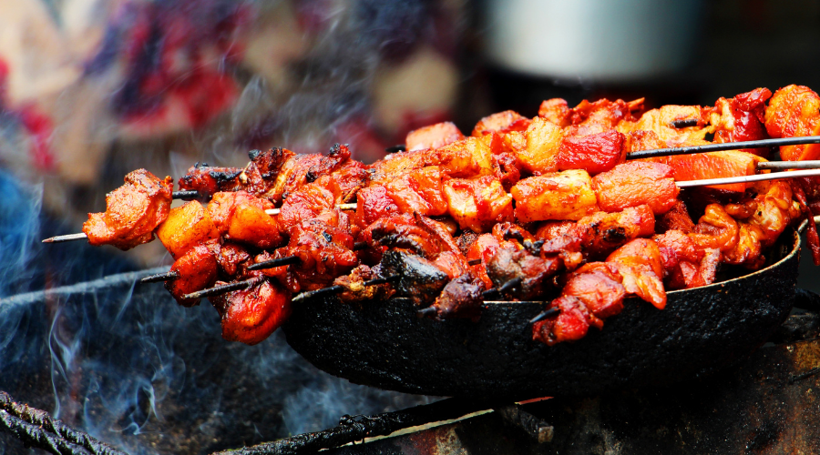

Buff Sekuwa

Description
Buff Sekuwa is a popular Nepali delicacy consisting of buffalo meat marinated in a blend of traditional spices and grilled over natural charcoal or wood fire. It is celebrated for its deep smoky aroma and bold, spicy flavors, often featuring timur (Sichuan pepper) and mustard oil for its signature taste.
The preparation involves marinating cubed buffalo meat for at least 6 hours or overnight to ensure it becomes soft and juicy. The meat is then skewered and roasted over hot coals, sometimes with vegetables like capsicum and onion, until cooked through.
Buff Sekuwa is typically served with beaten rice (chiura), salad, pickles (achar), and various sauces such as yellow sauce or sweet chili sauce. It is a staple at festivals, family gatherings, and roadside stalls, particularly famous in regions like Terahara and Dharan in eastern Nepal.
Ingredients
- Boneless meat (mutton, pork, or chicken), cut into cubes - 500 g
- Garlic paste - 1.5 tbsp
- Ginger paste - 1 tbsp
- Cumin powder - 1.5 tsp
- Coriander powder - 1 tsp
- Red chilli powder - 1.5 tsp
- Turmeric powder - 1 tsp
- Fenugreek seeds (lightly toasted & crushed) - 0.5 tsp
- Garam masala - 1 tsp
- Mustard oil - 1 tbsp
- Lemon juice or yogurt - 1 tbsp
- Salt to taste
- Freshly chopped coriander
- Skewers for grilling
Steps
- Mix the meat with all the spices, garlic-ginger paste, mustard oil, lemon juice/yoghurt, and salt in a bowl. Marinate for at least 4 hours.
- Grill over charcoal or wood fire for the most authentic taste.
- Turn occasionally until the meat is cooked and slightly charred. (About 15–20 minutes total)
- Alternatively, bake in a preheated oven at 220°C (428°F) for 20–25 minutes, turning once halfway.
- Heat a spoonful of mustard oil, add fenugreek seeds until dark brown, pour over cooked sekuwa for extra aroma.
- Serve hot with sliced onions, green chilli, lemon wedges, and tomato pickle.
Home